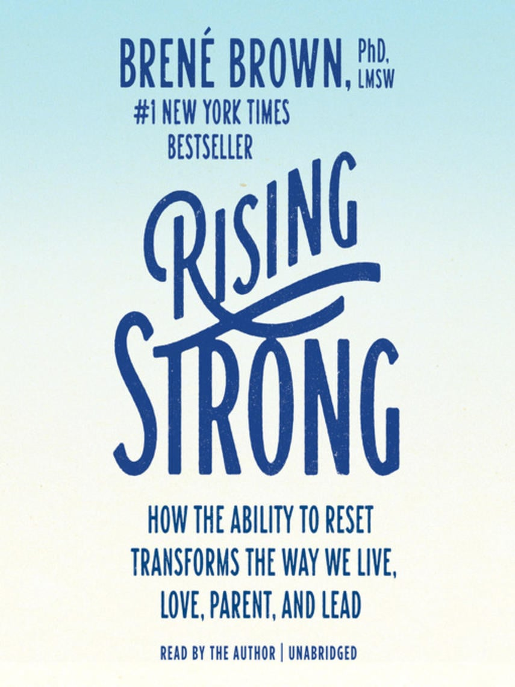

Justin:
28 Days Later
Juan:
The Blair Witch Project
Morgan:
The Cabin in the Woods
Karen Henrie, senior editor
Jennifer Bulat
managing editor
Go to Jennifer’s pick

Bookmark this now: Hope for the Day is a Chicago nonprofit
mental-health advocate and suicide-prevention educator. Its Find Help page may be the single-most-proactive (nonexhaustive) mental-health resource available on quick notice.
You are not alone; pop in your zip code at the link and see just how
close free or reduced-cost services—including medical care, transportation, food, and job training—are to you.
Mental health and illness is an area of healthcare and social impact
very near and dear to me. We don’t have to wait to address mental health until crisis—proactivity is key to breaking the stigma around confronting mental health. Have hope, talk about it, and know that it’s OK not to be OK.
Caroline Koch
manager of creative operations
Go to Caroline’s pick
Erik Delfin
design associate
Go to Erik’s pick

Self-help books sometimes get a bad rap, but the ones written by researcher Brené Brown are different. One of them, Rising Strong, is constructed to help readers get back up after they’ve been emotionally knocked down. Through personal anecdotes and data compiled from her research, Brown offers the reader a path for working through pain, grief, and shame. It’s like one long, rewarding therapy session in book form.
Jen:
The Ring

October 10 is World Mental Health Day, a day where people around the world band together to raise awareness about mental health and break down stigmas surrounding the topic. We’ve been thrilled to see mental health become a common topic of conversation in the business world over the past year and a half, with many professional-services firms
publishing consistently on the topic. Below you’ll find resources for help; personal perspectives on how we maintain our mental health; a book recommendation; and even some creative, comical takes on mental health and the human condition.
It’s also fully fall, and in the lead-up to Halloween, we’re sharing our favorite scary movies—making this month’s picks a bit of an odd mix of sincerity, self-help, and spookiness.
I love the webcomic Dinos and Comics for its elegance and constraint. Featuring a simply drawn dinosaur and his small group of prehistoric animal friends, each four-panel comic portrays with poignance and humor the range of self-doubts, hang-ups, and mental afflictions endemic to the human condition. I follow the comic on Instagram, but it is also available on Twitter and Facebook. You can also find these comics collected in The New York Times bestselling book Dinosaur Therapy, written by James Steward and illustrated by K Roméy.

Our favorite scary movies
It’s easy to get caught up overthinking mistakes we’ve made or anticipating upcoming events in idle moments of our days, leading us to take the present moment for granted. Practicing mindfulness—exercises focused on being present—can help us overcome these anxieties. Personally, mindfulness has helped me focus on goals, errands, and relationships and improve the quality of my life. The Mental Health Foundation offers a helpful resource on mindfulness—including what it
is and how to practice it.



Go to Karen’s pick
Mimi Li
senior editor
Go to Mimi’s pick

Therapy! It’s great. Here are some resources for when we want to address culturally specific challenges.
Asian American therapists:
Asian Mental Health Collective
Asian American Therapists in Chicagoland
Black therapists:
Therapy for Black Girls
Therapy for Black Men
Latino and Hispanic therapists:
Latinx Therapy
Queer therapists (and how to find them):
“Why I Needed to See a Queer Therapist (And How You Can Find
One, Too)”
A catch-all resource for inclusive therapists:
Inclusive Therapists